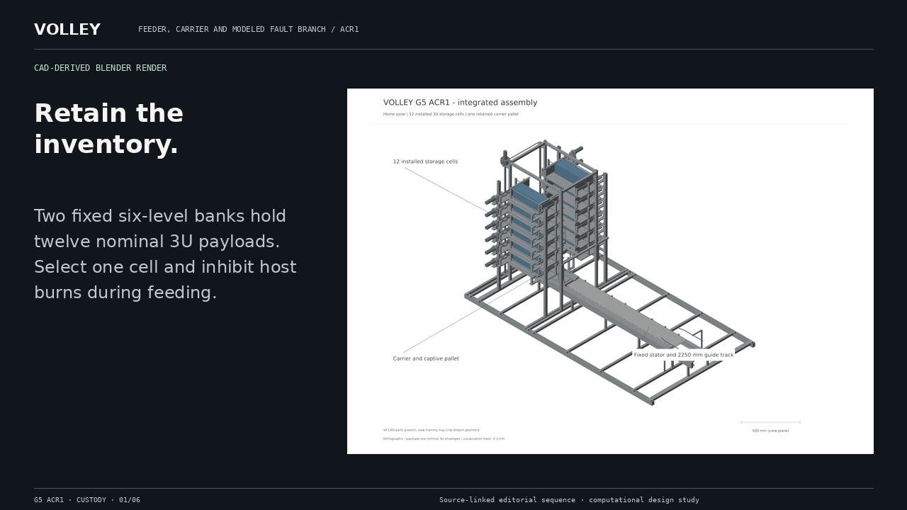
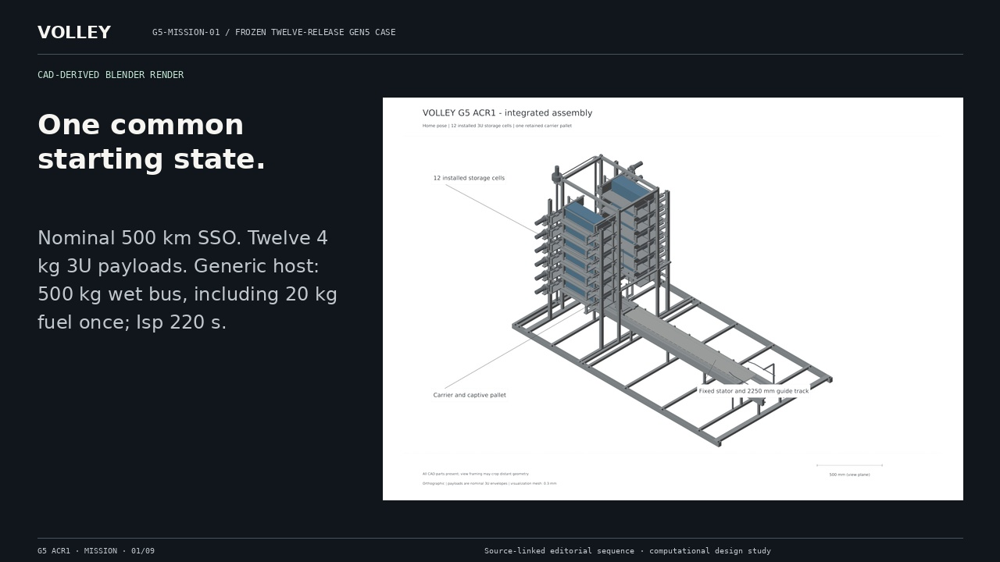
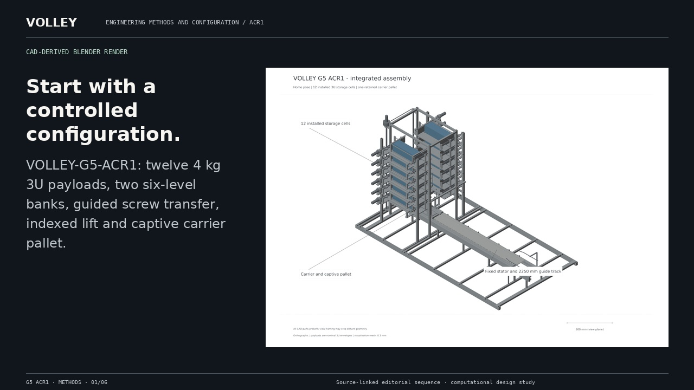

One path. Commanded departures.
System overview / ACR1 · 72 s
Open filmShort editorial films combine accepted CAD-derived views, explicitly conceptual motion diagrams and frozen numerical results. All information is also available as text and stills.
System overview / ACR1 · 72 s
Open filmFeeder, carrier and modeled fault branch / ACR1 · 78 s
Open filmG5-MISSION-01 / frozen twelve-release Gen5 case · 108 s
Open filmEngineering methods and configuration / ACR1 · 54 s
Open filmReduced motion is enabled. Read the transcript or still storyboard, or choose playback.
72 seconds · explicit playback · silent editorial film with English captions

Reduced motion is enabled. Read the transcript or still storyboard, or choose playback.
78 seconds · explicit playback · silent editorial film with English captions

Reduced motion is enabled. Read the transcript or still storyboard, or choose playback.
108 seconds · explicit playback · silent editorial film with English captions

Reduced motion is enabled. Read the transcript or still storyboard, or choose playback.
54 seconds · explicit playback · silent editorial film with English captions
The editable source retains every slide, duration, source identity and diagram coordinate. The original CAD scene remains in the separate Blender source archive. Motion diagrams explain the sequence and are explicitly labelled; they are not CAD kinematic or hardware measurements.